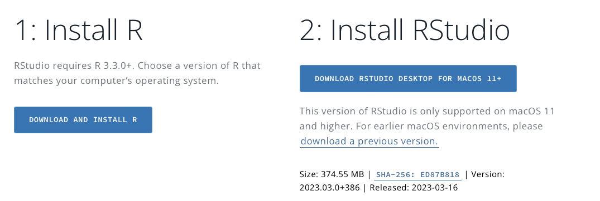
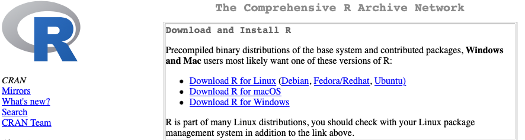
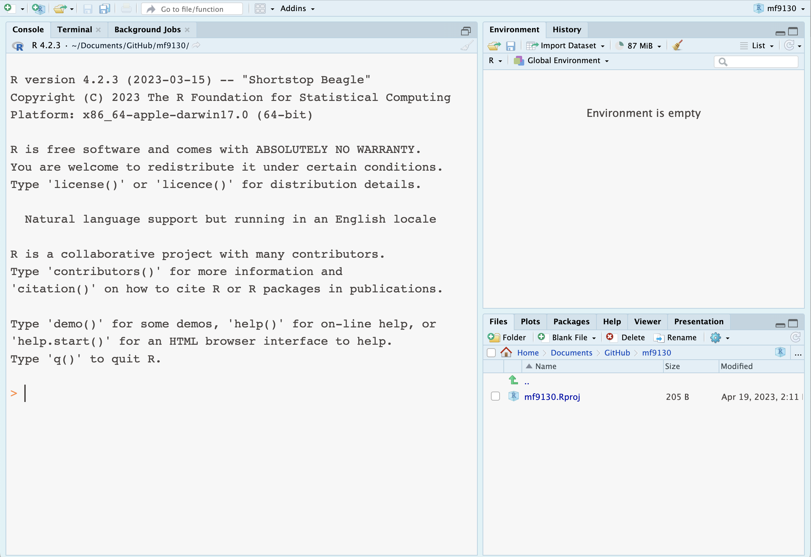
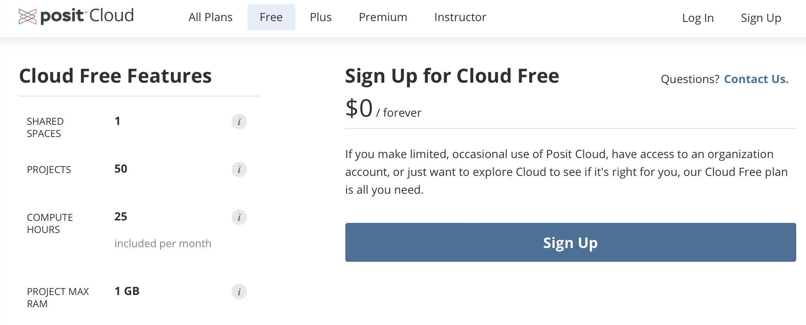
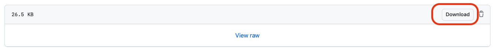

Get started
Here you will find useful information on how to get started.
In this workshop we will be using R. You can either
- (recommended) have R and Rstudio installed on your laptop
- or, use Posit cloud (formerly Rstudio Cloud).
Option 1: Set up your RStudio on your laptop
You will need both R and Rstudio, they are two separate things.
You can download Rstudio here. In this page it will ask you to install R, so it should be clear to follow.

You can download R for Linux, macOS or Windows here or here

Once you have finished installing both R and Rstudio, open Rstudio, and you should be seeing something like this:

Watch these YouTube videos if you are stuck.
Option 2: Use Posit Cloud
It is recommended to have R and Rstudio installed on your laptop, this is because you have a better control of where you prefer to download data and course material. This is also useful when you want to analyse your own datasets. For example, you might have to upload datafiles to the server for Posit Cloud to work.
However, if there is a problem with the installation, you can use Posit Cloud as an alternative.
On Tuesday morning we will see if most people can successfully make R run on their laptop and make necessary adjustments.
Posit Cloud is free of charge for personal users. You need to sign up for a new user account and have internet connection.

Once you signed up, you can open a new workspace, and it will look like something like this. If it is the first time you use Posit Cloud, it will be empty (i.e. no script or data).

Data
The datasets used in this course are stored in this folder.
Download data
Go to the repository, select the data you want to download by left-click the file name
If it is a dataset in
.csv, .txtformat, you will see something like this

- find Raw button, right-click, you will see a list of options
- choose Download Linked File, this will download the data into your default download folder
- alternatively, choose Download linked file as… so that you can change where you put it and file name.
- If it is a dataset in
.dta, .xlsxor other format, you might not see the data directly:

- find Download button, left-click, and you will download it into your default download folder.
Optional: download data via URL
If you feel like it, you can also download data inside R via URL. You can read more about it here.
Code
R scripts are stored in this folder.
To download an R script, it is similar to downloading a dataset

Alternatively, you can create your own R script locally inside Rstudio, by copy and paste the script from Github.
Resources
You will find the material used in class on this page.
We keep updating the material, so please stay tuned!
Books and papers
You can find these books in the library.
Videos
Install R and Rstudio YouTube videos